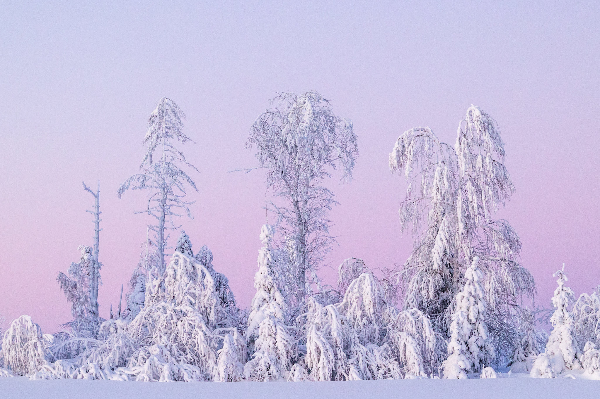

Tervetuloa Luontokuvaajan Kulmaan!
Täällä jaan omia luontokuvausseikkailujani sekä vinkkejä ja inspiraatiota luontokuvaukseen.
Aamun ensimmäiset säteet valaisevat hiljalleen metsän salaiset polut, ja luonto herää eloon kaikessa kauneudessaan. Luontokuvauksen ihanuus piilee siinä kyvyssä tallentaa hetkiä, jotka välittävät rauhan, ihmeen ja yhteyden luonnon voimaan.
Kuvauksen taika on siinä, miten se tavoittaa luonnon yksityiskohdat, jotka saattavat jäädä huomaamatta kiireisen arjen keskellä. Kukan terälehtien kaste, auringonlaskun viimeiset säteet heijastuvat järven pinnasta, tai metsän hämärässä piilotteleva eläin - kaikki nämä hetket muuttuvat lumoaviksi tauluiksi, kun ne ikuistetaan valokuviin.
Luontokuvauksen avulla voimme vaipua hetkeksi luonnon syliin ja kokea sen kauneuden intensiivisesti. Kuvat voivat herättää tunteita ja muistoja, tuoden mukanaan ilon, kiitollisuuden ja kunnioituksen luontoa kohtaan.
Kuvattaessa metsän suhisevia puita, vuoriston huippuja tai avaraa merenrantaa, kuvaaja yhdistyy luontoon henkisellä tasolla. Luontokuvauksen ihanuus on siinä, että se tarjoaa mahdollisuuden jakaa nämä ainutlaatuiset hetket muiden kanssa. Kuvien kautta voimme välittää luonnon kauneutta, inspiroida muita suojelun tärkeydestä ja herättää yhteistä kunnioitusta ympäristöämme kohtaan.
Näin luontokuvauksesta tulee enemmän kuin pelkkä kuvaamisen muoto - se muuttuu portiksi luontoon, mahdollisuudeksi nähdä maailma uusin silmin ja herättää sisäinen seikkailijamme. Luontokuvauksen ihanuus piilee sen kyvyssä avata sydämemme luonnon monimuotoisuudelle ja kauneudelle.
Minä kuvaamassa villiä luontoa 2015, tästä kaikki alkoi.

Ulkomailla kuvaaminen oli jännittävää ja ihan erilaista kuin Suomen Lapissa. Alempana lisää Lapin kuvausreissuista!
Kuvauslaitteisto
Suomen luonnossa kuvaan kameralla, joka sulautuu hyvin luontoon. Käytän myös tiettyihin tilanteisiin tarkoitettuja vaatteita, jotta olisin huomaaamattomapi.

Kuvaus: Karhu lumisissa maisemissa
Lapin maisemissa
Kuvaus: Talven 2019 maisemia
Kuvaus: Lumenpeittämät puut
Listasin kolme uniikkia asiaa Lapin luonnosta ja erityisesti sen kuvaamisesta
"Syvenny luonnon kauneuteen ja koe hetket, jotka kertovat tarinoita tuhansista sanoista - luontokuvaus ikuistaa hetken kauneuden silmiemme iloksi."
Ylempi teksti kiteyttää miksi pidän luontokuvauksesta.